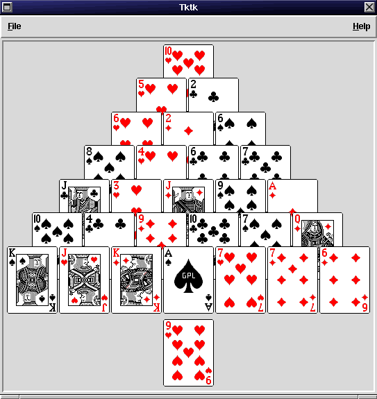
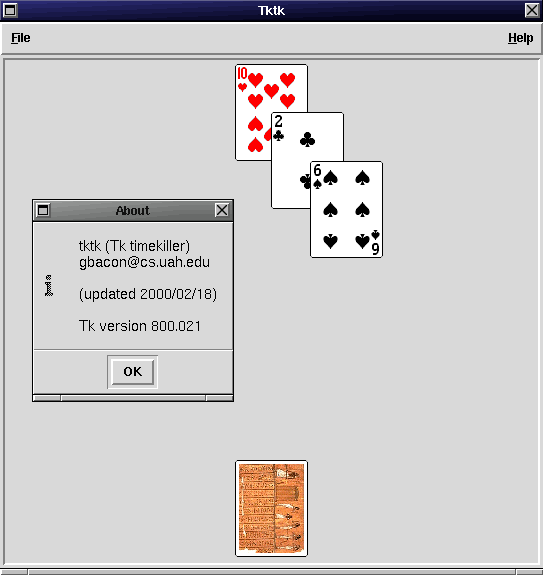

Reprinted courtesy of The Perl Journal, http://www.tpj.com.
| URLs | |
| Tk | http://www.cpan.org/ |
| Pyramid rules | http://www.semicolon.com/solitaire/rules/pyramidrules.html |
| Card images | http://www.waste.org/~oxymoron/cards/ |
| Tktk source code | http://home.hiwaay.net/~gbacon/perl/tktk.tar.gz |
One evening, I saw my wife playing a solitaire game that I'd never seen before (and whose name I still don't know). I asked her to explain the rules. The game turns out to be a simpler variation of Pyramid, which is described at http://www.semicolon.com/solitaire/rules/pyramidrules.html.
To play, you lay out the cards in a seven row pyramid. The first row contains one card, the second two, and so on. (Don't get too excited if you think I'm describing the drinking game Drunk Driver.) When laying subsequent rows, you should cover each card in the previous row with two cards (imagine staggered joints in brickmasonry), as shown in Figure 1.
Figure 1: The start of the game.

If you want to impress your solitaire aficionado buddies, call these 28 cards the tableau. The rest of the cards are the stock. To play, place the stock's bottom card face up on top of the stock. This top card is called the base. Your goal is to pick up all the cards in the tableau. You may pick up any uncovered card whose denomination or rank is adjacent to the denomination of the base card, regardless of suit. For instance, if your base card is a six, you can pick up a five or a seven. Aces are consider adjacent to both deuces and kings.
When you pick up a card from the tableau, it becomes the new base card. When you decide that you want a new base card (usually when you can't pick up any more from the tableau), you flip from the bottom of the stock. The game is over when you empty the tableau (you win) or when you exhaust the stock (you lose).
It turned out to be a fun game. A solitaire game has to be tantalizing to hold the player's interest, and this one definitely is. My wife would laugh cruelly when I bemoaned being so close to winning (she says she's only won about three times in all the years that she's played). I realized that she had infected me with an awful meme, so now I'll spread it to you.
The more I played, the more I became impatient with tedious tasks like shuffling the deck and laying out the cards. I kept thinking, ``I should implement this game in Perl,'' and eventually I did. I had a lot of fun in the process, and this article will describe the steps involved.
The first decision was whether the interface should be graphical or
character-based. I chose graphical. (Sorry, I'm a wuss--I even play the
tiled X11 version of nethack.) The next step was to find some card images (because I didn't want to
wake up the Gimp), and a web search found http://www.waste.org/~oxymoron/cards/. The images have sensible
names: qs.gif is the queen of spades, th.gif is the ten of hearts, and so on.
Before we can play, we have to shuffle the deck. The Fisher-Yates algorithm to the rescue:
# Fisher-Yates shuffle
sub shuffle {
use integer;
my $array = shift;
my $i;
for ($i = @$array; --$i; ) {
my $j = int rand ($i+1);
@$array[$i,$j] = @$array[$j,$i];
}
}
Of course, we need a deck to shuffle. I decided to build a hash whose keys
are the card denominations and suits (the basenames of the card images) and
whose values are Tk::Photo objects created from the card images:
my %card;
sub init_cards {
my $c = shift;
my @denom = ( 2 .. 9, qw/ t j q k a / );
my @suits = qw/ h d c s /;
my @dim = ( -width => CARDWIDTH, -height => CARDHEIGHT );
foreach my $d (@denom) {
foreach my $s (@suits) {
my $im = $c->Photo(-file => "cards/$d$s.gif", @dim);
$card{"$d$s"} = $im;
}
}
}
Now that we have a shuffled deck, we need to lay out the cards. I considered using Gtk, but I have more experience with Tk and wanted to play my game as soon as possible.
Using Tk, we create a Tk::Canvas object and place Tk::Photo image items on it. The layout is pretty simple. The tableau's vertical axis
of symmetry coincides with the vertical center line of the canvas. For each
row, we compute half the width of the whole row, move left half that
distance, and place cards from left to right. The code looks like this
(note that I called the tableau the ``field''):
my %pos;
sub init_field {
my $c = shift;
my $deck = shift;
my $width = $c->cget('width');
my $y = 7;
my $x;
for (1 .. 7) {
# the 3 + results in a better looking layout
$x = 3 + $width/2 - int($_/2) * (CARDWIDTH+CARDSPACE);
if ($_ & 1) { # odd-numbered row?
$x -= CARDWIDTH/2;
}
# place $_ cards
my @row = splice @$deck, 0, $_;
for (@row) {
$c->create(
'image',
int $x, int $y,
-anchor => 'nw',
-image => $card{$_},
-tags => [ 'field', "card=$_" ],
);
$x += CARDWIDTH + CARDSPACE;
}
$y += CARDHEIGHT/2;
}
}
Notice that we didn't have to bother with clipping, the process of deciding which pixels should be displayed. We simply placed the rows from back to front (that is, from the top of the pyramid to the bottom), letting new items cover anything that might be under them. This is called the painter's algorithm and, conveniently, achieves the arrangement we want.
The heart of the program ties it all together:
my $mw = MainWindow->new;
my $c = $mw->Canvas(
-width => 7*CARDWIDTH + 22,
-height => 5*CARDHEIGHT + 18,
);
init_cards $c;
my @deck = keys %card;
shuffle \@deck;
init_field $c, \@deck;
$c->pack;
MainLoop;
This program is enough to produce a layout similar to Figure 1.
I once had a math professor who obsessively moved radicals out of the denominators of fractions because ``our teachers like it better this way.'' You'd think he would have been able to cast off those chains when he took his Ph.D. Programmers (or at least pedants like me) feel the same sort of guilt about rampant use of globals. I decided to aggregate all the game state information into an anonymous hash and then pass the state to the differen subroutines. There's a Rob Pike quote that I like to repeat: ``The O-O languages give you more of course - prettier syntax, derived types and so on--but conceptually they provide little extra.'' I bring it up here because too many programmers would have carried this aggregation a step further to defining a class that implements the game. That would be hunting rabbits with a tank because it's not likely that we'll have more than one game running at once and because I don't plan on inheriting and overriding methods from the game.
Our program is about to become at least a little interesting as we make it recognize and respond to events. The events that we're interested in are when the user clicks on a card in the tableau and when the user clicks on the base card.
Tk operates under the event driven model. This means that the programmer
says to Tk, ``When a certain type of event happens (like a mouse click or a
key press), execute this code.'' The code that Tk executes in response to
an event is known as a callback. The way to register callbacks (that is, how you ask Tk to execute callbacks when
certain events take place), is to use the bind() method. Here's a simple example:
$parent->bind(qw/field <1>/ => sub { print "Saw a click!\n" });
This tells Tk to print a message when the user clicks Button-1 (usually the
left mouse button) on an item or widget with the
field tag. See the Tk::bind documentation for details.
Tags are simple strings that we can associate with items and widgets. When
we laid the cards in the field, we gave them two tags: the field
tag, and a tag indictating which card it is.
$c->create(
'image',
int $x, int $y,
-anchor => 'nw',
-image => $card{$_},
-tags => [ 'field', "card=$_" ],
);
As you can see, tags allow the programmer to create a logical association among different widgets.
Now that we know how to deal with events, the code to cycle through the stock is a SMOP (Simple Matter Of Programming). If there's a card on the bottom of the stock, we display and remember it. Otherwise, we display the back of a card and tell Tk to stop executing callbacks when the user clicks the base card.
sub next_base {
my $game = shift;
my $c = $game->{CANVAS};
my $deck = $game->{DECK};
my $ht = $c->cget('height');
my $wd = $c->cget('width');
# XXX: the 3 + is for a better looking layout
my $x = 3 + $wd/2 - CARDWIDTH/2;
my $y = $ht - 3 - CARDHEIGHT;
# lose any base card that may be there
$c->delete('base');
my $image;
my $up;
if ($deck and @$deck) {
$up = pop @$deck;
$image = $card{$up};
}
else {
$image = $card{b};
$c->bind(qw/base <1>/ => '');
$up = 0;
}
$up = substr $up, 0, 1;
$c->create('image',
int $x, int $y,
-anchor => 'nw',
-image => $image,
-tags => [ 'base' ],
);
$game->{UP} = $up;
}
We register this callback with
$c->bind(qw/base <1>/ => sub { next_base $game });
To legally pick up a card, it must be completely uncovered. The
Tk::Canvas class provides a method for asking which items overlap a certain rectangular
area. Before we can do that, we have to know where (in terms of canvas
coordinates) we laid each card. We add this line to init_field():
@{ $game->{POS}{$_} }{ qw/ X Y / } = ($x, $y);
Tk associates the current tag with the item or widget involved in triggering the current callback. We
can ask Tk what other tags the ``current'' item has to figure out what card
it is. The code looks like this:
my($cur) = $c->find('withtag' => 'current');
my($card) = grep /^card=..$/, $c->gettags($cur);
In the rules, I stated that it is legal to pick up a card if it is uncovered and its denomination is adjacent to the base card's denomination. We can ask Tk whether any cards are covering the selected card:
$card = substr $card, -2, 2;
my($x, $y) = @{ $game->{POS}{$card} }{qw/ X Y /};
my @over = grep $_ > $cur,
$c->find('overlapping',
$x, $y => $x+$CARDWIDTH, $y+$CARDHEIGHT
);
Armed with the knowledge of the denominations of the base card and the selected card, and we need to be able to decide whether those denominations are adjacent. I originally used a big, overly verbose hash of hashes where the test for denomination adjacency looked like
if ($rank{$base_denom}{NEXT} eq $field_denom or
$rank{$base_denom}{PREV} eq $field_denom)
{
...;
}
Stephen Lidie suggested the following data structure:
my %rank = (
a => '2k',
2 => '3a',
# ...
q => 'kj',
k => 'aq',
);
The test for a legal move then becomes
if ( index($rank{$base_denom}, $field_denom) >= 0 ) {
$c->delete($cur); # remove the card from the tableau
push @$deck, $card;
next_base $game; # ...and make it the new base card
}
If we determine at some point that the insidious user is attempting to make
an illegal move, we ring the bell with $c->bell and return.
As I was testing the game, I would pick up a card and then realize that I
should have picked up another card. Because of the bookkeeping in
init_field() that kept track of where the cards were in the tableau, to undo we need
only replace the card in the tableau and the last base card on the stock.
The code is simple:
sub undo {
my $c = shift;
my $game = shift;
my $up = $game->{UPCARD};
return unless $up;
my($x, $y) = map int, @{ $game->{POS}{$up} }{ qw/ X Y / };
$c->create('image',
$x, $y,
-anchor => 'nw',
-image => $card{$up},
-tags => [ 'field', "card=$up" ],
);
$game->{UPCARD} = 0;
push @{ $game->{DECK} }, $game->{OLDBASE};
next_base $game;
}
Notice the $game->{UPCARD} check. This makes it so that players may only undo a
pickup. If we also allowed players to undo after flipping from the bottom
of the stock, they would enjoy the luxury of a one-card lookahead, and
that would make the game too easy.)
At this point, I had a playable game, but I wanted to add a more polished feel. The first touch was to add a check to make sure that the cards directory was where we expected:
my $CARDS;
BEGIN {
# where the card images live
$CARDS = "/your/directory/of/card/images";
unless (-d $CARDS) {
$0 =~ s!^.*/!!;
die "$0: cards directory `$CARDS' does not exist!\n" .
"(Did you forget to set \$CARDS to the proper value?)\n";
}
}
What GUI would be complete without menus and menu accelerators?
my $restart = sub { $game = new_game $c };
my $undo = sub { undo $c, $game };
my $mod = 'Alt';
if ($^O eq 'MSWin32') {
$mod = 'Control';
}
elsif ($^O eq 'MacOS') {
$mod = 'Command';
}
my $menu = $mw->Menu;
$menu->cascade(
-label => '~File',
-tearoff => 0,
-menuitems => [
[
command => '~New game',
-command => $restart,
-accelerator => "$mod+N",
],
[
command => '~Undo pickup',
-command => $undo,
-accelerator => "$mod+U",
],
'',
[
command => '~Quit',
-command => [ destroy => $mw ],
-accelerator => "$mod+Q",
],
],
);
$mw->configure(-menu => $menu);
$mw->resizable(0, 0);
$mw->bind("<$mod-n>" => $restart);
$mw->bind("<$mod-q>" => [ destroy => $mw ]);
$mw->bind("<$mod-u>" => $undo);
Any artist will tell you that the work isn't done until it's signed:
my $about = $mw->Dialog(
-title => 'About',
-bitmap => 'info',
-default_button => 'OK',
-buttons => [ 'OK' ],
-font => $FONT,
-text =>
"tktk (Tk timekiller)\n" .
"gbacon\@cs.uah.edu\n\n".
"(updated $UPDATED)\n\n" .
"Tk version $Tk::VERSION",
);
The result is shown in Figure 2.
Figure 2: A Dialog box containing information about the game.

I wish it would do something cool when the player empties the tableau, but I haven't come up with anything cool enough. If you have any ideas, please mail them to me.
As you've seen, Tk provides a flexible framework for developing graphical
user interfaces. This program was an easy effort: it only took a couple of
days to develop. The result was a fun alternative to sol.exe for killing time. Grab the code from the TPJ website and give it a try.
__END__
Greg Bacon <gbacon@cs.uah.edu> is a Perl evangelist who must receive $1 million in
contributions from the Faithful. Otherwise, he risks being struck down by
Larry Wall. Greg would also like to remind you that there's no more
important safety rule than to wear these--safety glasses.